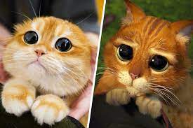
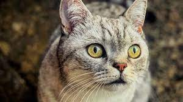

о кошках
Кошки – одна из самых популярных разновидностей домашних животных. Пушистые любимцы ласковы, общительны,
доставляют хозяевам немало приятных минут. При этом красота и миловидность кошачьей породы невероятны. При
выборе кошки нужно учитывать не только ее внешние данные, пусть даже самые эффектные, но и множество других
нюансов – характер, размер, прихотливость.
Особенности
Если решение о приобретении кота сделано, необходимо выбрать породу будущего питомца. Милые кошки встречаются во
многих разновидностях. Прежде чем остановиться на внешности, оцените характеристики породы, какие-то идеально
подойдут семье с детьми, другие внесут уют и осмысленность в жизнь одинокого человека.

